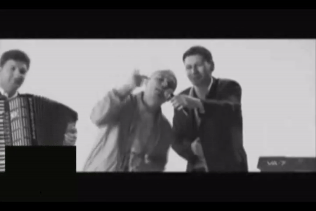

- Undeva-n Balkani
- Americandrim
- Fresh
- Change
- Vestul Salbatic
- VIP
Dragos Gardescu is a Romanian rap music artist, born July 22, 1979 in Bucharest, Romania. He is widely regarded as one of the pioneers of the gangsta rap subgenre in the Romanian musical landscape. He debuted as a member of La Familia, alongside fellow Romanian rapper Tudor Sisu. He started his activity in 1994, alonside Tudor, but started focusing on his solo career after the latter was imprisoned for drug-trafficking in the mid 2000's. He released 2 solo albums around 2008 - 2009, well-regarded by the underground public. His first big mainstream hit was Undeva-n Balkani, followed by other hits such as Change, VIP. He remains an important part of the Romanian music industry, even releasing a new La Familia album in 2017.

| Album | Release year |
|---|---|
| Pana la capat in felul meu | 2001 |
| Muzica de tolaneala si depravare | 2008 |
| Romanisme - partea I | 2009 |
| Romanisme - partea II | 2009 |
| Aventurile domnului Puy(a) | 2019 |